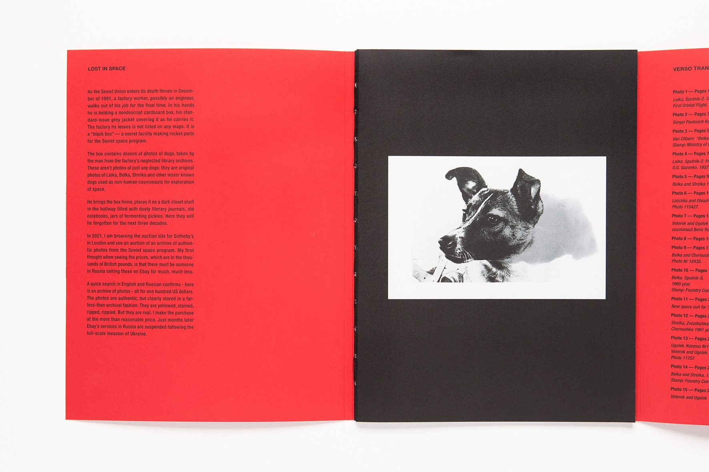
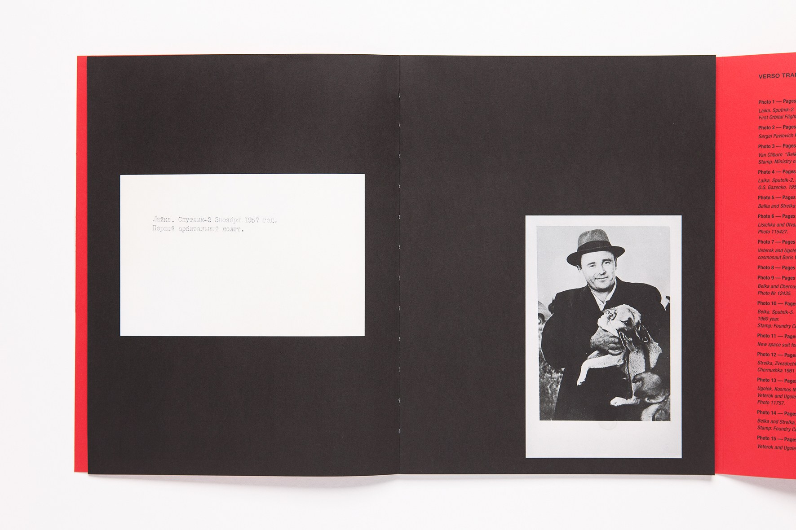
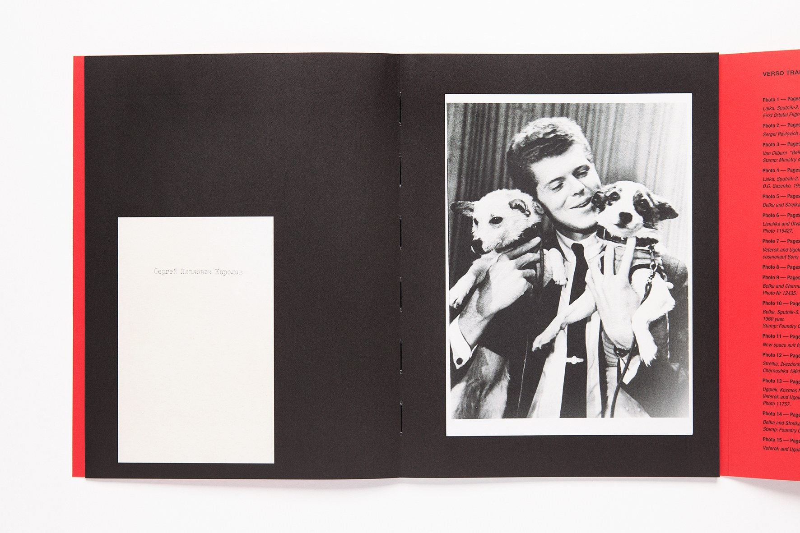
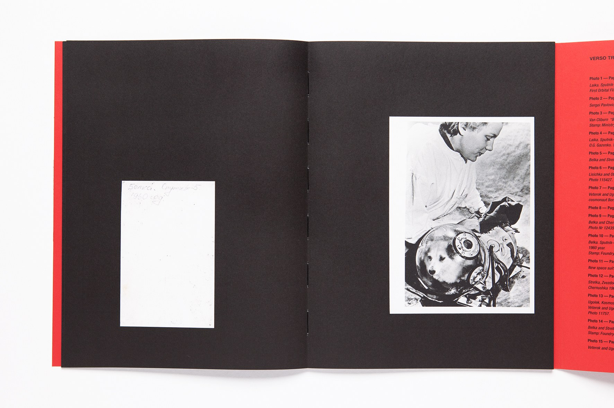
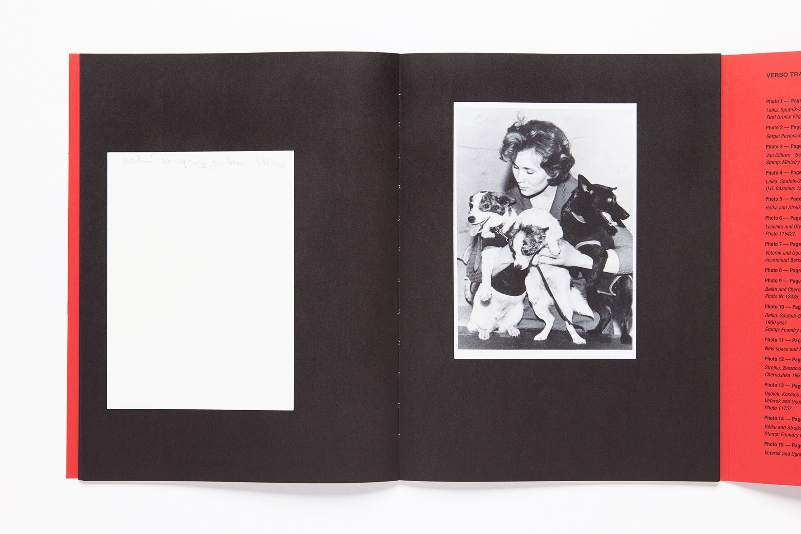
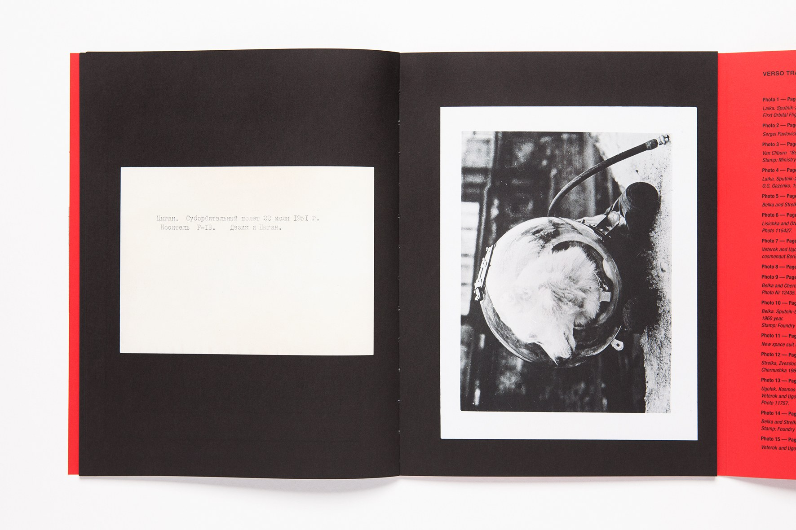
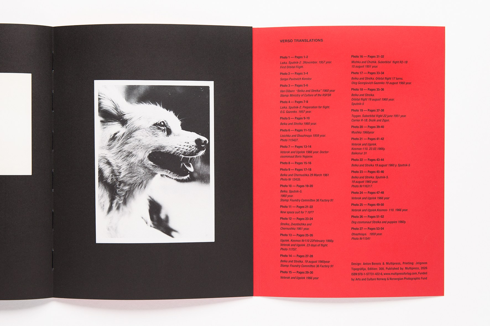

Lost in Space, 2026
Lost in Space is an artist publication featuring an archive of original Soviet space-dog photographs stolen during the collapse of the Soviet Union and recovered by the artist via eBay. The book reproduces both the recto and verso of each photograph.
Photography: Line Bøhmer Løkken







